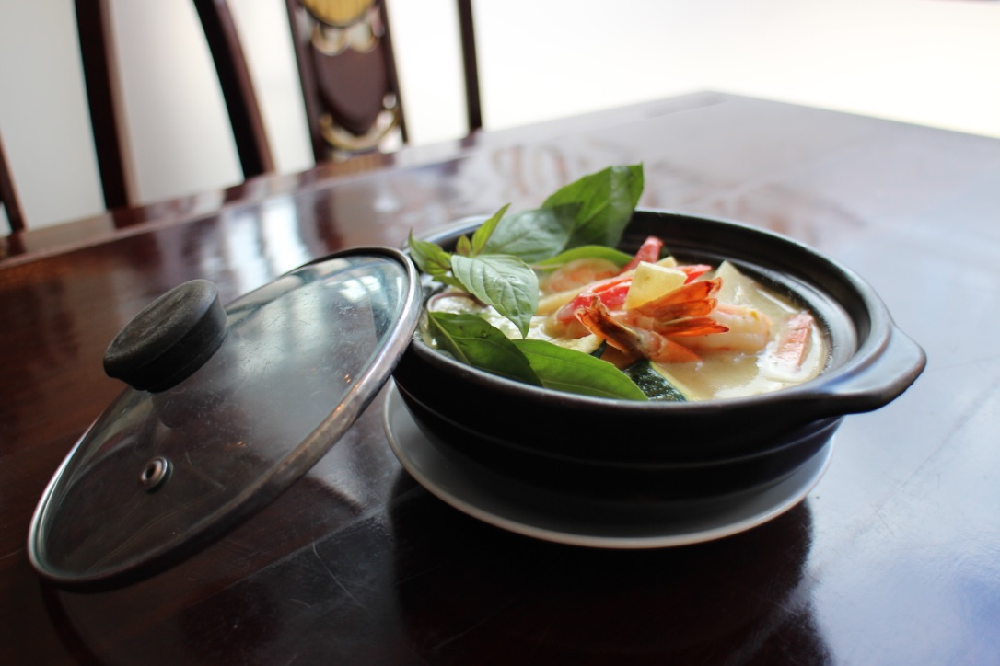
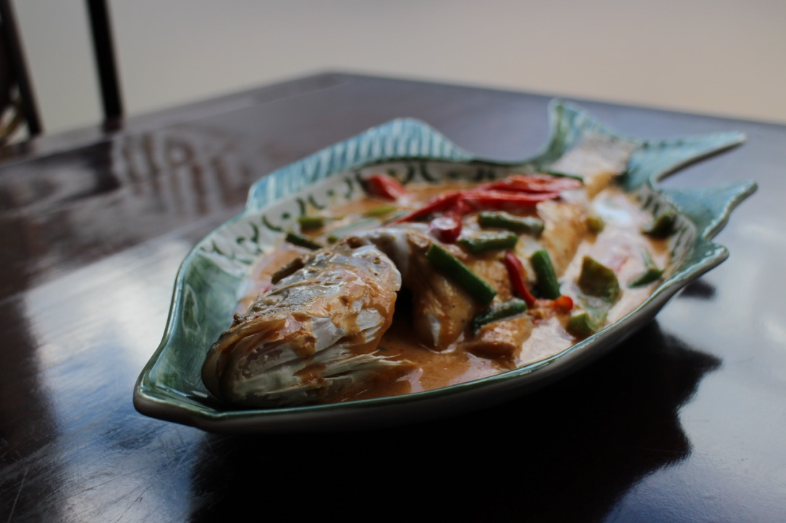
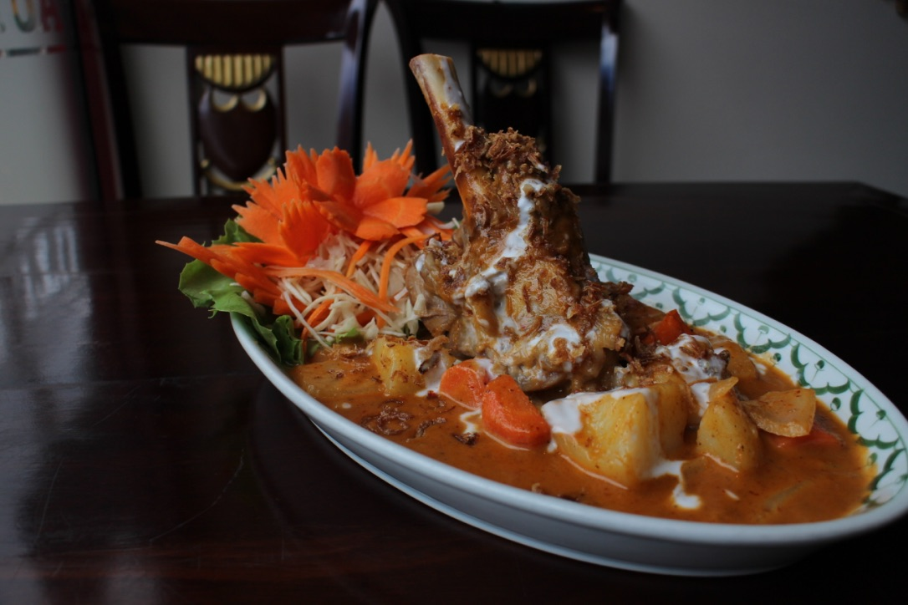

Ahan Pad (Stir Fry)
There will usually be a stir-fried dish on the table at a Thai meal, maybe two! All stir-fried dishes are prepared in the wok.
23. Pad Bai Kha Pow - Chilli and Basil
Stir fried with mixed peppers, French beans, chilli, sautéed in a savoury mixture of Thai sweet basil and spices.
24. Tod Khra Tiem Pik Thay
Stir fried in garlic and black pepper.
25. Pad Met Mamuang
Stir fried with cashew nuts, mixed peppers, mushroom and onion.
26. Pad Takhay Pik
Stir fried with lemongrass and chilli.
27. Pad Pik Pow
Stir fried with mixed peppers, onion, chilli paste and spices.
28. Pad Khing
Stir fried with fresh ginger, onions and mushrooms.
29. Pad Prio Wan - Thai Sweet and Sour
With tomato, peppers, pineapple, cucumber, and onion, sautéed in a Thai style sweet and sour sauce.
30. Pad Broccoli
Stir fried with broccoli.
31. Nam Man Hoi
Stir-fried with oyster sauce
All our stir-fry and curry dishes can be ordered with your choice of meat, bean curd or vegetables. Please specify your option at the time of ordering.
Kari - Curry
Curries form an important part of the Thai meal. Originally from India, curry has evolved into a rich stew with a hundred variations.
32. Kaeng Paneang - Peneang Curry
Dry curry with vegetables, coconut milk and Thai herbs.
33. Kaeng Khiew Wan - Sweet Green Curry
This coconut milk based curry is considered the "Queen of curries", rich and satisfying. The sweet green curry is the perfect remedy for a cold winter evening. With bamboo shoots, mixed peppers and green beans simmered in coconut milk, Thai basil, lime leaves & assorted Thai spices.
34. Kaeng Massaman - Massaman Curry
Southern-style curry, turmeric-infused and hearty, simmered with coconut milk, with potatoes and peanuts.
35. Kaeng Phed - Red Curry
Cooked with coconut milk and bamboo shoots.
36. Kaeng Kari - Yellow Curry
This is the mildest of curry cooked with potatoes and onion.
37. Kaeng Pa
A very spicy jungle style curry, prepared with vegetables. (No coconut milk)
38. Kaeng Phed Pet Yang
Roasted duck cooked in red curry with pineapple, vine tomato and grapes.
Beef (£9.50)
Chicken/Pork/Bean Curd (£8.50)
Prawns/Mixed seafood (£11.50)

Pak - Vegetable
65. Pad Pak Roam (£4.50)
Stir fried mixed vegetables.
66. Pak Bung Fai Daeng (£5.95)
Stir fried Morning Glory with garlic and chilli.
67. Pad Pak Cad Khao (£5.95)
Stir fried Chinese leaves with mushroom and fresh chilli.
68. Pak Neung (£4.50)
A healthy, low calorie option of steamed vegetables topped with oyster sauce.
Thalay - Sea Foods
39. Pla Yum Mamuang (£12.00)
Pan fried salmon topped with mango salsa.
40. Chu Chi Pla (£16.00)
Steamed whole sea bass topped with red curry sauce.
41. Hoi Malangphu (£8.50)
Stir fried mussel with lemongrass, chill and coconut milk.
42. Pla Kratiem Sot (£12.00)
Fried red snapper fillets drenched with our garlic, and peppercorn sauce.
43. Pla Tord Khing Sot (£12.00)
Fried red snapper fillets smothered in ginger, onion, garlic, and mushroom.
44. Pad Ped Thalay (£12.75)
Mixed seafood wok seared in a hot and spicy sauce.
45. Pla Neung Ma Nao - Lime Sea Bass (£16.00)
Steamed whole sea bass with lemongrass, lime juice and crushed chilli, topped with lime sauce.
46. Pla Tord Bai Krapaow (£12.00)
Crispy fried red snapper fillets topped with chilli and Thai basil.
47. Pla Nam Mac-kham (£12.00)
Fried red snapper fillets topped with spicy tamarind sauce.
48. Hor Mok - Spicy Steamed Fish (£12.00)
In this classic dish, the flavour of fish is combined with coconut milk, chilli and spices then steamed to make each serving a culinary treat.
49. Fried Soft Shell Crab with Garlic and Peppercorn (£12.50)
50. Hoyshell Pad Pik Pow (£12.50)
Scallops sautéed in chilli and sweet basil sauce.

Ahan Pi Sait - Specialties
51. Weeping Tiger (£12.50)
Grilled sirloin steak, sliced and served with spicy nam dip.
52. Nam Thai Chicken (£9.50)
Grilled Chicken fillets marinated with lemon grass & chilli.
53. Pet Yang (£12.50)
Roasted duck breast smothered with honey sauce.
54. Lamb Massaman (£14.50)
Lamb shank slowly cooked in Massaman curry, with potato & peanuts.
55. Nam Thai Mackerel (£9.95)
Grilled mackerel fillets marinated with lemongrass and chilli.
56. Goong Pao (£14.95)
Grilled butterfly king prawns, topped with chilli sauce.
57. Gai Yang (£12.00)
Marinated spatchcocked poussin in honey, grounded herbs and spices, then grilled until golden brown, served with chilli sauce.

Khao Leh Gwethiow - Rice and Noodles
58. Steamed Jasmine Scented Rice (£2.50)
59. Coconut Rice (£3.00)
Jasmine Rice cooked in Coconut Milk.
60. Egg Fried Rice (£3.00)
61. Special Fried Rice (£4.50)
Fried rice with chicken, raisins, cashew nuts and prawns.
62. Glutinous or Sticky Rice (£3.00)
63. Pad Thai Koong (£6.45 / Vegetarian - £5.45)
This is considered the unofficial "national dish" of Thailand. Pad Thai is a soothing stir fried mixture of egg, rice noodles, crisp bean sprouts, spring onions and prawns in a savoury sauce topped with crushed peanuts and lemon.
64. Pad Siew Yew (£5.45)
Rice noodles stir-fried with egg, vegetables and soy sauce.